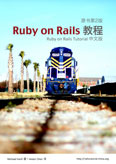

{{ include JB/setup }}

<section class="box books">
  <header class="box-top">
    <h1 class="box-title f-left">翻译的书</h1>
    <div class="f-right"><a href="{{ BASE_PATH }}/pages/hire.html" title="Hire Me">Hire Me</a></div>
  </header>
  <div class="box-inner">
    <ul class="book-list">
      <li><a href="http://railstutorial-china.org"></a></li>
      <li><a href="https://leanpub.com/everydayrailsrspec-cn"></a></li>
    </ul>
  </div>
</section>

<section class="box recent">
  <header class="box-top">
    <h1 class="box-title">最新文章</h1>
  </header>
  <div class="box-inner">
    <ul>
      {% for post in site.posts limit: 20 %}
      <li><span>{{ post.date | date: "%b %d, %Y" }}</span> &raquo; <a rel="bookmark" href="{{ BASE_PATH }}{{ post.url }}" title="{{ post.title | escape }}">{{ post.title }}</a></li>
      {% endfor %}
    </ul>
  </div>
  <footer class="box-bottom">
    <p class="more"><a href="{{ BASE_PATH }}{{ site.JB.archive_path }}" title="文章归档">&raquo; 更多文章</a></p>
  </footer>
</section>
